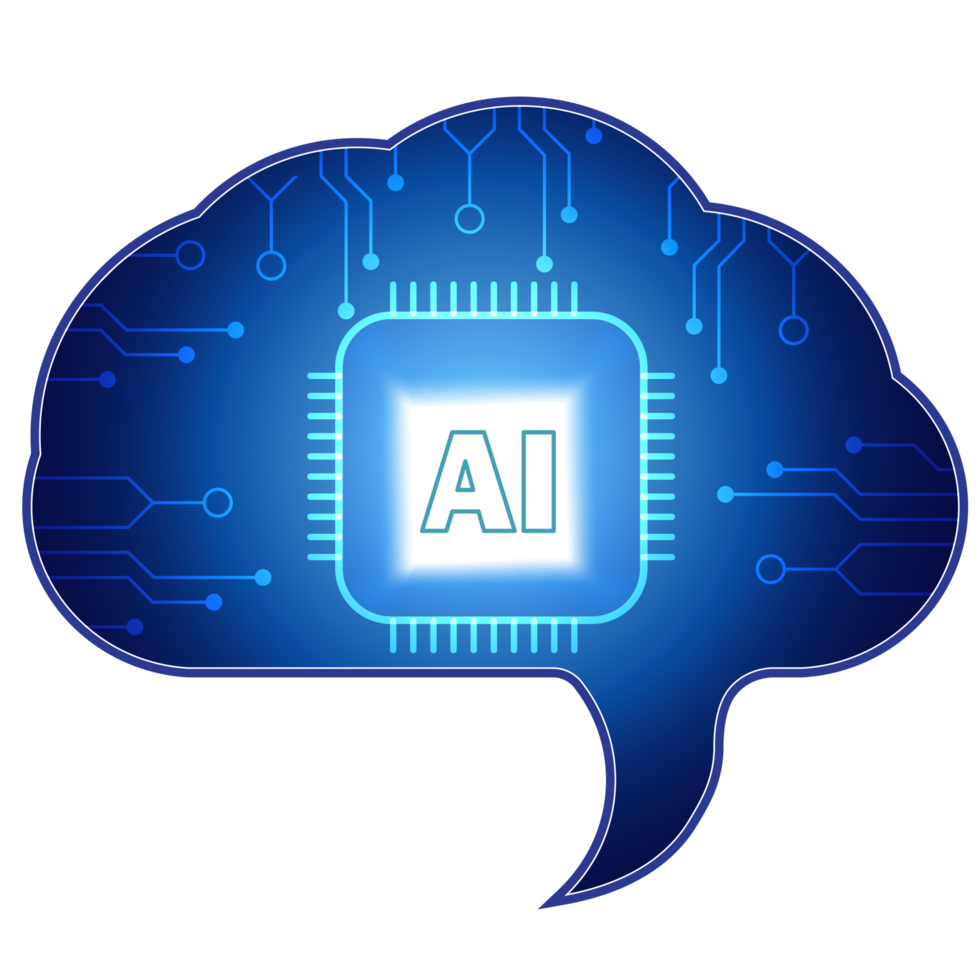
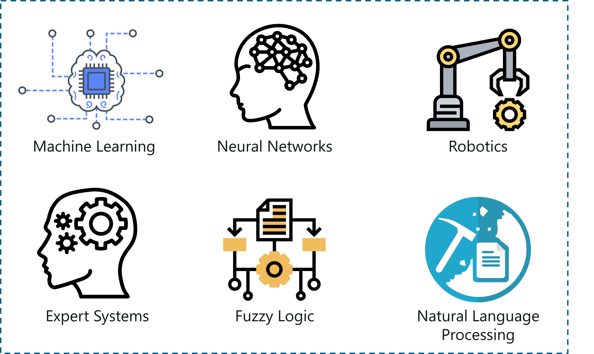
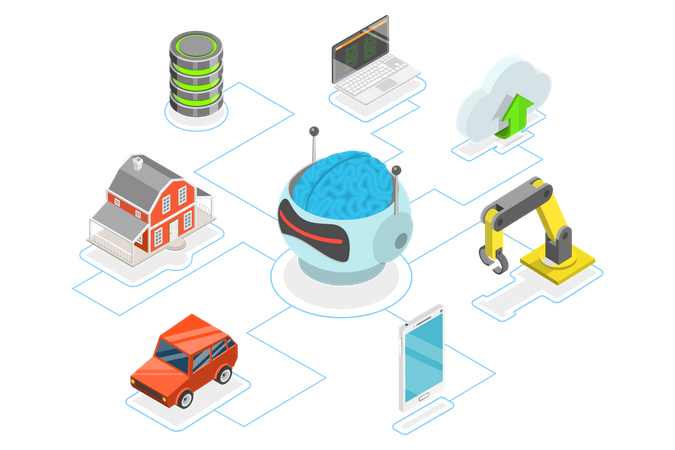
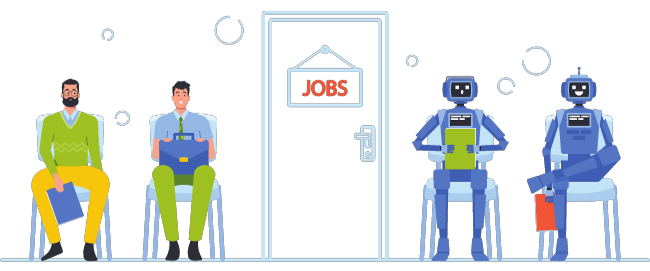
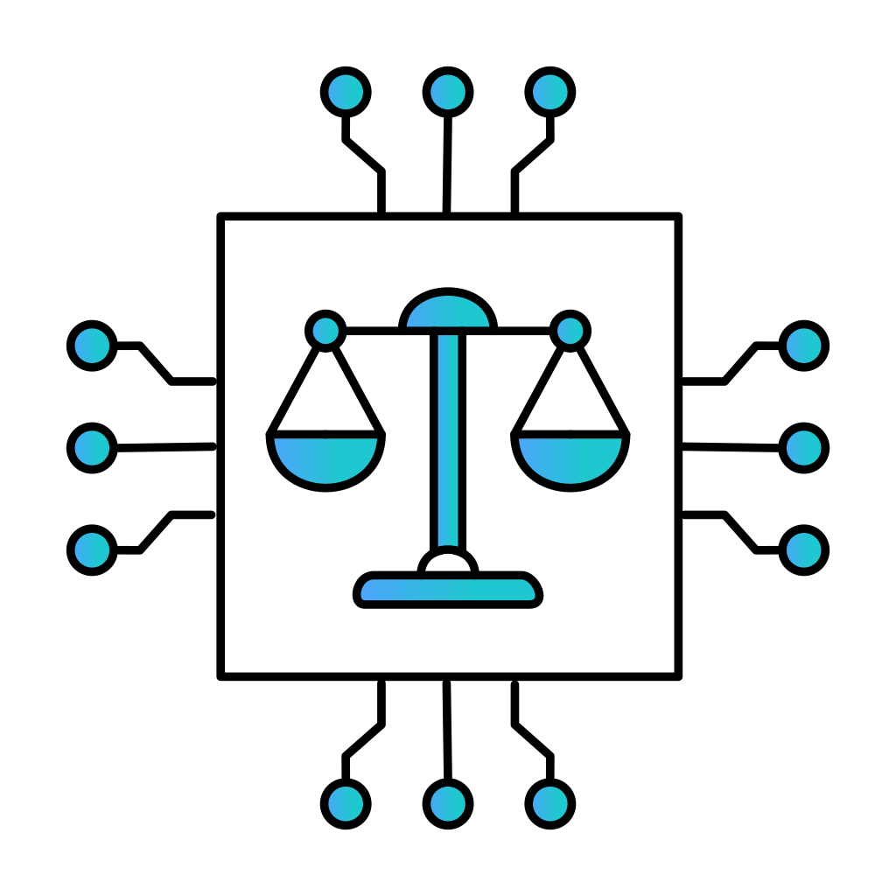

The World of Artificial Intelligence
Artificial Intelligence is taking over the way we learn, shop, communicate, and create. This brochure gives insight into what AI is and how it works and why you need it.
What is AI?
Artificial Intelligence (AI) is computer software that can think, learn, and make decisions in human-like ways. AI studies data, learns patterns, and can improve over time without the need to update its programming.
- Learning From Data
- Decision Making
- Pattern Recognition
- Automation
The Science Behind AI
Artificial Intelligence may seem almost unreal because you can't see behind the scenes and what it's actually doing. AI is powered by real science, math, and computer engineering. Let's go DEEPER!
Neural Networks:
It's modeled after the human brain, and it's made from layers of small calculators called neurons inspired by the human brain. Each neuron is capable of receiving information and processing it to be passed to the next layer. The data is being transferred through the layers, and AI is starting to understand what it's seeing.
Large Computing Power:
AI has to have very strong computers called GPUs and TPUs to train. This is because of how many calculations it must process, which is over millions and sometimes billions of calculations.
Reinfocement Learning:
AI learn by trial and error and will keep trying to improve. This is used in self-driving cars and videos games.
Types of AI
Narrow AI is designed to perform specific tasks. A perfect example would be Alexa or Siri, these can only do tasks that they were made for and don't learn or understand information beyond that task. This is the most common AI you see and use in your everyday life.
General AI has the capability of performing tasks just like a human due to its ability to learn, reason, and solve problems. This AI technically doesn't exist yet and is still in the works. An example would be a robot driving a car all on its own, knowing when to stop or not to hurt people on the road.
Superintelligent AI name doesn't lie; it's an AI that is smarter than humans and can surpass human intelligence, reasoning, creativity, and problem solving. Again, just like general AI this type of AI is only theoretical and is the future prediction.
Machine Learning AI, this type of AI is machines that can learn from data and improve its performance over time. It does this by learning patterns without the need to be programmed, and it improves as it sees more data.
Fears & Benefits of AI
AI will take over some jobs due to AI automation, leaving people without income, but it also creates lots of new high paying jobs. This is leaving people in fear about job security in the future, making them hate AI and not wanting it to be implemented into the economy.
AI is a tool not a weapon, and it is here to help make life easier and people happier. AI can handle those repetitive tasks that no one likes doing, so humans can focus on creating and problem-solving or even just enjoying life.
The benefits of AI is constantly growing, and it can help in many ways such as;
- Automation:No need to do repetitive work anymore.
- Accuracy: Helps reduce errors with decision-making.
- Efficiency: Can take on large amounts of data and process it quickly.
- Innovation: They are the source of power to new technology in healthcare, entertainment, and education.
How AI Is Used Today

Not everyone can see how AI can help the average person in their everyday regular life; you came to the right to find out. You have probably been already using AI every day and didn't realize it was an AI. I'm not talking about the obvious ones like ChatGPT, I'm talking about streaming services (Neflix, Youtube, Prime) that use AI for their recommendation systems based off your interest. Your home may be infested with AI already, with Smart Home Devices such as; thermostats, security cameras, appliances.
Examples:
- Self-Driving Cars
- Customer Service Chatbots
- Healthcare AI
- Virtual Assistants
- Siri
- Google Maps (GPS)
You may be using AI right now and just never knew it...
Jobs Created By AI
The possibilities with AI just never stop; it's even creating jobs. Increasing the demand for people that are good with technology, AI needs people that can build it. Every AI system requires a team of real humans to create, train, and maintain it.
Examples Of New Jobs:
- AI Engineers
- Data Scientists
- Machine Learning Developers
- Prompt Engineers
The demand for these roles keeps growing because every industry is interested in this tool, but it needs data and I mean a lot of it if it's going to be Efficient and accurate. That's why it will even create more jobs such as Data Annotators, Data Quality Analyst, and Data Pipeline Technicians.
AI just doesn't replace jobs it's changing the type of jobs that are wanted and needed. As it grows so do the skills people need to guide, build, manage and improve it.
Ethical Use of AI
The data AI gets is from real people, so it's important that information is protected and kept private. When AI is designed with this in mind, it is programmed to protect your personal information. This includes information such as your name, email, phone number, address, and photo of your face.
Ethical AI follows a rule called data minimization and basically what is, A privacy principle in the world of AI. Its job is to collect the smallest amount of information needed to make it work.
What is Data Minimization?
Only collecting data that is truly needed.It helps prevent you from companies and AI tools from gathering data that isn't required. This helps reduce privacy risks because personal data that they don't have can't be leaked by anyone else but you.
Education

It's making a huge impact on the educational system, helping both teachers and students. This has changed the way schools operate by having personalized learning because AI has the ability to adapt lessons to each student's needs.
It Can:
- Realize strengths and weaknesses
- Suggests areas where extra practice is needed
- Adjust lessons based on progress
The automation AI provides has made grading, lesson planning, and tracking performance much faster and easier. This gives teachers more time to focus on interacting with the students and teaching.